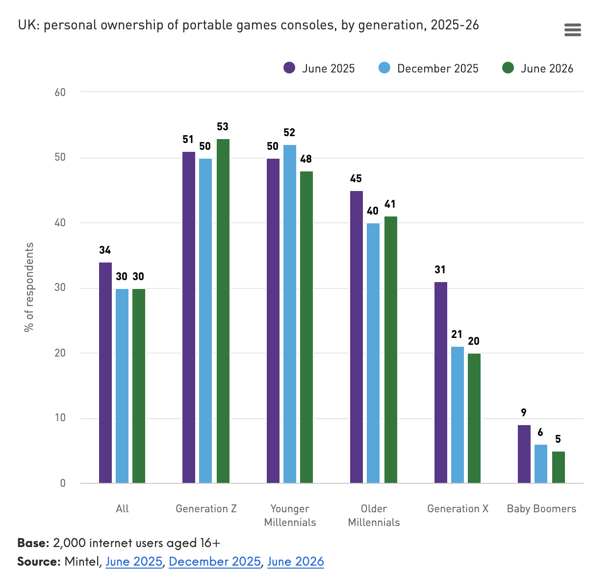

This report from Mintel shows the technology trends in the United Kingdom. What is shows is that there has been an increase in handheld consoles in recent years.
"In 2026, the portable gaming PC space has become increasingly competitive, with devices such as the MSI Claw, Acer Nitro Blaze, and AYANEO all vying for market share against established contenders such as Nintendo, Lenovo and Microsoft."
The same report finds however, that the increasing choice in handheld gaming consoles has not translated into more people buying handhelds outside the core audience.
"As a result, the market appears to be consolidating with younger enthusiasts the kay audience still. While rising hardware prices and competition from mobile gaming limit adoption among older consumers. This suggests near term future growth will come more from retaining and monetising existing gamers than recruiting entirely new audiences."
Taking a detour from Nintendo for a bit, this article examples the environmental impact of a Sony PlayStation 4, the different materials that are mined and extracted to create the console and the overall damage to the environment.
"...it occurs to me that the PlayStation 4 has the most dazzling and problematic parts of global capitalism purring in unison. It is an exquisite, leanly designed machine pulsing with the exploitation of Earth and its people. "
"Lithium-ion technology has downsides — for people and the planet. Extracting the raw materials, mainly lithium and cobalt, requires large quantities of energy and water. Moreover, the work takes place in mines where workers — including children as young as seven — often face unsafe conditions."
"Conflict minerals refers to any minerals like tin, tantalum and tungsten, purchased from troubled areas of the Democratic Republic of the Congo where violence and human rights abuses are prevalent. The mines themselves are a hot spot for violence as military groups battle for control of them, and sales of the minerals fund further fighting."
"Nintendo's partners collectively identified 309 smelters and refiners around the world that provided them with 3TGs. The CFSI could only confirm 294 of them as actual smelters or refiners, and only 223 (72%) were certified conflict-free. Another 23 were on the group's Active list, which means that had begun the process to be audited and earn conflict-free certification. "
Nintendo estimates that the annual yearly electricity consumption of a Nintendo Switch 2, assuming 2 hours of play a day, is 14 kWh using Wi-Fi without a LAN, rising to 50 kWh if a LAN connection is used and maintained.
A guide on how to recycling gaming equipment in the United Kingdom.
"The UK generates around 6 million tonnes of e-waste every year and is the second biggest global producer of e-waste per capita."
An assessment by iFixit on the Nintendo Switch 2 console, which scored a 3/10 which means it'd be difficult to open up the Switch 2 for repairs by the average person.